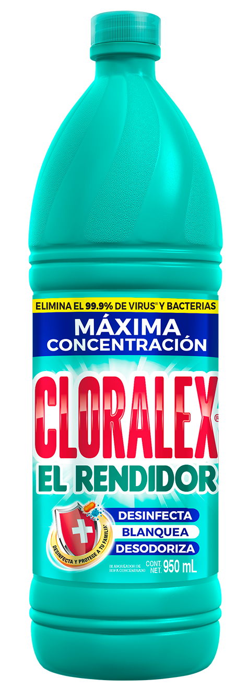

Cloralex el Rendidor

Precio: $15
Codigo: 554728
Cloralex El Rendidor es un blanqueador, que en uso directo o diluido desinfecta y elimina el 99.9% de virus y
bacterias en superficies ceramicas y plasticas, agua para beber, frutas y verduras, y trastes.
-
Características:
- Elimina de las superficies el virus causante del Covid-19.
- Blanquea, desodoriza y desinfecta telas blancas de algodón, lino y poliéster.
- Desinfecta y limpia superficies.
- Blanqueador de ropa blanca.
- Elimina olores y manchas.